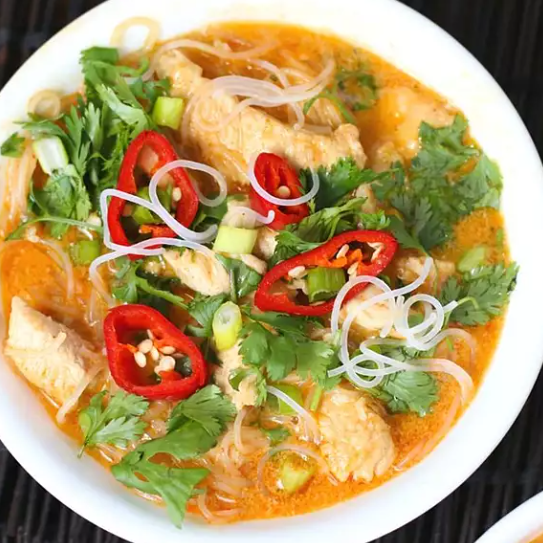

Red Curry Chicken

Description
Red Curry Chicken is a simple and easy meal that is sure to satisfy.
This recipe comes from here.
Luckily you only need 5 ingredients and they are readily available at your local grocery store.
Ingredients
- 2 tbls coconut oil
- 16 oz boneless chicken breast, cubed
- 14 oz coconut milk
- 11 oz bottle red Thai curry sauce
- 16 oz package dried rice stick vermicelli noodles
Directions
- Heat oil in a large skillet on high heat. Add chicken cubes; cook until browned, about 2 minutes per side. Reduce heat to medium-high and add coconut cream and curry sauce. Cook until chicken is no longer pink in the center and the juices run clear, about 5 minutes. An instant-read thermometer inserted into the center should read at least 165 degrees F
- Fill a large pot with lightly salted water and bring to a rolling boil; stir in vermicelli pasta and return to a boil. Cook pasta uncovered, stirring occasionally, until the pasta is tender yet firm to the bite, 4 to 5 minutes. Drain.
- Reduce skillet heat to simmer. Add the noodles and let simmer until flavors are absorbed, about 5 minutes. Divide chicken and noodles among individual serving bowls.